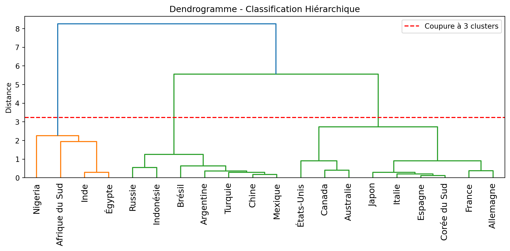

import pandas as pd
import matplotlib.pyplot as plt
from sklearn.preprocessing import StandardScaler
from scipy.cluster.hierarchy import dendrogram, linkage, fcluster
df = pd.read_csv("donnees_pays.csv")Algorithme CAH utilisant Python
Exemple
Enjeu : On souhaite regrouper les pays selon leur PIB, leur espérance de vie et leur taux d’alphabétisation.
Import des bibliothèques
Chargement les données
df = pd.read_csv("donnees_pays.csv")
df.head()| Pays | PIB_par_hab | Espérance_de_vie | Taux_alphabétisation | |
|---|---|---|---|---|
| 0 | France | 41463 | 82.5 | 99.0 |
| 1 | Allemagne | 48649 | 81.2 | 99.0 |
| 2 | Brésil | 9602 | 75.0 | 93.2 |
| 3 | Nigeria | 2229 | 61.0 | 62.0 |
| 4 | Chine | 12720 | 77.3 | 96.8 |
Normalisation avec sklearn
X = df[["PIB_par_hab", "Espérance_de_vie", "Taux_alphabétisation"]]
scaler = StandardScaler()
X_scaled = scaler.fit_transform(X)Calcul des liens hiérarchiques (Ward)
Z = linkage(X_scaled, method="ward")Affichage du dendrogramme avec ligne de coupure
plt.figure(figsize=(10, 5))
dendrogram(Z, labels=df["Pays"].values, leaf_rotation=90)
plt.axhline(
y=Z[-3, 2] + 0.5,
c='red',
linestyle='--',
label="Coupure à 3 clusters"
)
plt.title("Dendrogramme - Classification Hiérarchique")
plt.ylabel("Distance")
plt.legend()
plt.tight_layout()
plt.show()
Découpage en 3 clusters
df["Cluster"] = fcluster(Z, t=3, criterion="maxclust")
df[["Pays", "Cluster"]]| Pays | Cluster | |
|---|---|---|
| 0 | France | 3 |
| 1 | Allemagne | 3 |
| 2 | Brésil | 2 |
| 3 | Nigeria | 1 |
| 4 | Chine | 2 |
| 5 | Inde | 1 |
| 6 | États-Unis | 3 |
| 7 | Japon | 3 |
| 8 | Afrique du Sud | 1 |
| 9 | Mexique | 2 |
| 10 | Canada | 3 |
| 11 | Italie | 3 |
| 12 | Espagne | 3 |
| 13 | Argentine | 2 |
| 14 | Égypte | 1 |
| 15 | Russie | 2 |
| 16 | Turquie | 2 |
| 17 | Indonésie | 2 |
| 18 | Corée du Sud | 3 |
| 19 | Australie | 3 |
Conclusion :
La CAH permet d’identifier 3 groupes de Pays:
- Cluster 1 : Nigeria, Afrique du Sud, Inde, Égypte.
Ce sont les pays avec un développement faible (PIB par habitant plus faible, espérance de vie plus courte, taux d’alphabétisation relativement bas)
- Cluster 2: Russie, Indonésie, Brésil, Argentine, Turquie, Chine, Mexique
Ce sont des pays émergents avec un niveau de développement économique moyen, une amélioration progressive de l’espérance de vie et de l’éducation,
et un fort potentiel économique.
- Cluster 3 : États-Unis, Canada, Australie, Japon, Italie, Espagne, Corée du Sud, France, Allemagne
Ce sont les pays développés ayant un PIB par habitant élevé, une espérance de vie longue, et un taux d’alphabétisation proche de 100%.